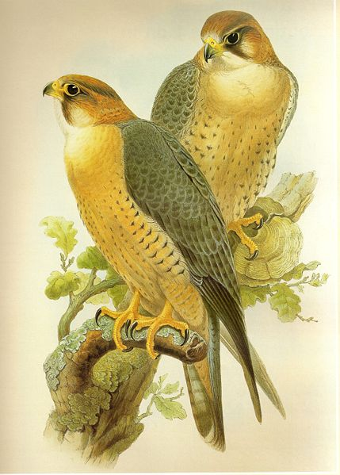
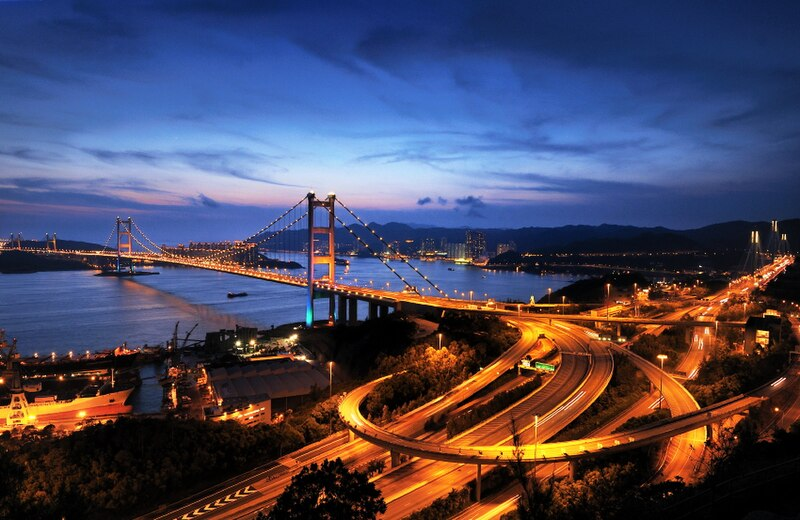
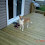
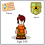

We're starting an Earth Research contest! We've prepared some interesting topics for you! :)
The first topic is The Fastest Birds!

The second topic is The Most Famous Bridges!

You have one week to post your replies!
Post your replies on our forum!!!
The winners get V-Flags and bugs :)
Have fun!
Hiki

-2.jpg)


91 comments:
first comment can't wait ;) i hope i win
danshannon12
Brooklyn Bridge is one of the famous Bridges around the world! The location it is in is New York City U.S.A. The purpose of it being there is because of vehiclar traffic!
Brooklyn Bridge is one of the famous Bridges around the world! The location it is in is New York City U.S.A. The purpose of it being there is because of vehiclar traffic!
PEREGRINE FALCON
This bird is the fastest bird (also fastest animal in the planet) ,which is in its hunting time/period only.In its hunting time,it goes upwards to the space for a long and in its stoop from a great height,then dives steeply at a speed of over 200mph which is more than that of cheetah,fastest animal in the world.But it doesnot make a place in the top when travelling in level flight so we can't see this bird in the top list of fastest birds even.
The first topic is the Fastest Birds and their Falcons, the second topic is the Famous Bridges and that particular bridge is the San Francisco Golden Gate Bridge. I loved the nichos party too bad about the FireMan suits!!!! We should be able to update our wadrobe, mine is way too full!!!
The bridge is the golden gate
and the bird is a ostrich
hope i win bex :)
i was first in the both the categories to give info and pics
lendso2(not lendso)
The fastest animal on earth is the Peregrine Falcon. It can fly at speeds of 90 mph horizontally, but when flying downwards they reach speeds of over 270 mph. This speed can not be match by any other animal in the world, be it on land, sea or sky.
I wish I can....
k lol its hard and thnx anyway
~snooop
A big city starts its devloppment on a river(there are a few exceptions).Then the devloppment goes separately on two banks by the river,until everybody sees:we need bridges.Its impossible to imagine Paris without Seineb and the bridges,London without Thames and its bridges.The Golden Gate is more famous in my opinion than the city of San Francisco.Bridges are not only masterpieces of building art and arcitecture,but are landmarks of cities and their culture
1.Golden Gate bridge from San Francisco.Build in 1937,this bridge is fascinating.Most everyone can recognize it.
2.Sidney Harbor Bridge is a landmark of Sidney and all of Australia.It was build in 1932 containing 6 millions of hand rivets.It has a huge hinges due to the hot Sidney sun.The painted surface is equal of 6 football fields
3.The Akashi-Kaikyo Bridge in Japan conects Kobe on the mainland with Awaji islands and measures 4300 metres,being the worlds longest of its kind.It is wind and earthquake proofed up to 80m/s and a respectively 8,5 degrees Richter scale.
4.Tower Bridge of London is so distinctively british,so old,so stylish and no one could think to it in another location than London.
5.Storbaelt bridge between Funen and Zealand in Denmark has a length of 6800 metres and was build spectacular way between 1986 and 1998
chobots name is :danshannon12
It is the Brooklyn Bridge.And i think the Peregrine falcon is the fastest bird.The brooklyn bridge is located in New York (USA).Hope i win
i think the most famus bridge is Brooklyn Bridge or sance frisco bridge in the world.next topic and the most fastest bird is a orched or a
the world’s fastest bird almost disappeared years ago due to DDT and other egg shell weakening pesticides. Now Florida has become the latest state to announce the official recovery of the Peregrine Falcon.
andybar said i don't now why my name of my blog came up but me andybar said it
andybar said i don't now why my name of my blog came up but me andybar said it

i know why they call it the famous bridge one because it is in one of the most crowded places in the us and f you look off the edge you get a good few of the ocean and the last one lots and lots of peopol go on it and its huge to i hope i win
~brockeydoo
p.s i just want the v flag but if you have to get the bugs all take that to
1. The Peregrine Falcon is the fastest creature on Earth. Peregrines have been clocked in dive speeds of up to 213 MPH.
2. Peregrine Falcons are also probably the toughest creatures in nature, capable of surviving flight stresses of up to 25 times the gravitational force of the Earth.
3. Peregrines strike one wing of their prey at the end of their stoop so as to avoid injuring themselves.
4. Peregrine Falcons live as long as 20 years in the wild.
5. The Peregrine Falcon, like the cheetah, has a specialized and highly efficient respiratory system which allows the falcon to breathe at high speeds and under conditions that would injure other birds.
6. The Peregrine Falcon was designated as an Endangered Species from the 1950s through the mid 1990s but has since recovered.
7. Peregrines inhabit many large cities around the world and are one of the key factors in controlling the populations of pigeons
, which are considered pests in some large cities.
My chobot name is toxicchobot
hi hiki the answer is: The Peregrine Falcon is not only the fastest bird in flight
quasion 2 : Golden Gate bridge
and andybar saids the other most fastest bird i now is a Peregrine Falcon or a orchid
wait again egnow all my ansers the bridge is a golden bridge or a brookklyn bridge and the fastest bird is a orchid or a Peregrine Falcon
andybar ^_^
awesome hope i win my name is blooper9206 oh and the bird is a peregrine falcon
Hey hiki ancient here heres my thing on bridges
Tower Bridge is a combined bascule and suspension bridge in London, England, over the River Thames. It is close to the Tower of London, which gives it its name.Name[›] It has become an iconic symbol of London.
The bridge consists of two towers which are tied together at the upper level by means of two horizontal walkways which are designed to withstand the horizontal forces exerted by the suspended sections of the bridge on the land-ward sides of the towers. The vertical component of the forces in the suspended sections and the vertical reactions of the two walkways are carried by the two robust towers. The bascule pivots and operating machinery are housed in the base of each tower. Its present colour dates from 1977 when it was painted red, white and blue for the Queen's Silver Jubilee. Originally it was painted a chocolate brown colour.[1]
Tower Bridge is sometimes mistakenly referred to as London Bridge, which is actually the next bridge upstream.[2] A popular urban legend is that in 1968, Robert McCulloch, the purchaser of the old London Bridge that was later shipped to Lake Havasu City, Arizona, believed that he was in fact buying Tower Bridge. This was denied by McCulloch himself and has been debunked by Ivan Luckin, the seller of the bridge.
~ancient~
and the bridge is brooklyn bridge its in new york city
and the bridge is brooklyn bridge its in new york city
The fastest bird is an ostrich and The bridge is the golden gate.I think
Fastest Bird : Hirundapus caudacutus(My dad is a scientist)
Famouse bridge: The Brooklyn bridge
More info on the fastest bird: The bird has a spiend tail.
More info On the famouse bridge: Date the bridge was finshed 1883.
My name is biggiesmals.
Do we hand right it on paper and draw a sketch rendering and then take a pic of it and email it?????
IM SO CONFUSED!!!!
The fastest bird is Peregrine Falcon ........
The famous bridge is Brooklyn bridge, New York City.
....:D :D.........
~!sightens!~
The fastest bird is the Peregene Falcon, and one of the most famous bridges, would be the San Fransisco Golden Gate Bridge. I'm so sad I missed the nicho's party! :( Well those are my answers, and I sure hope I win!!!! :)
fastest bird: peregrine falcon it can reach speeds of 180mph when diving from the sky.( not in water)
popular bridges: Brooklyn bridge finished in 1883 and is 1825m above the east river.
hope i win marymoocow
I wanted to try so i searched and i found that. ~Jamesterr2kewl~
Clocking in at a maximum of 229 feet a second peregine falcon is the fastest bird. ~Jamesterr2kewl~
the first bird more fast is a pregrin falcon
the first more important bridge is Brooklyn Bridge
George Washington Bridge , verranzo Bridge , San Francisco bridge
that my im joker321
Oooh
I hope I win because I didn't get my last v-flag... (I was so happy for nothing...)
The Peregrine Falcon (Falco peregrinus), also known simply as the Peregrine,[2] and historically as the "Duck Hawk" in North America,[3] is a cosmopolitan bird of prey in the family Falconidae. It is a large, crow-sized falcon, with a blue-gray back, barred white underparts, and a black head and "moustache". It can reach speeds over 322 km/h (200 mph) in a dive, making it the fastest animal in the world.[4] As is common with bird-eating raptors, the female is much bigger than the male.[5][6] Experts recognize 17–19 subspecies, which vary in appearance and range; there is disagreement over whether the distinctive Barbary Falcon is a subspecies or a distinct species.
The Peregrine's breeding range includes land regions from the Arctic tundra to the Tropics. It can be found nearly everywhere on Earth, except extreme polar regions, very high mountains, and most tropical rainforests; the only major ice-free landmass from which it is entirely absent is New Zealand. This makes it the world's most widespread bird of prey.[7] Both the English and scientific names of this species mean "wandering falcon", referring to the migratory habits of many northern populations.
While its diet consists almost exclusively of medium-sized birds, the Peregrine will occasionally hunt small mammals, small reptiles or even insects. It reaches sexual maturity at one year, and mates for life. It nests in a scrape, normally on cliff edges or, in recent times, on tall human-made structures.[8] The Peregrine Falcon became an endangered species in many areas due to the use of pesticides, especially DDT. Since the ban on DDT from the beginning of the 1970s onwards, the populations recovered, supported by large scale protection of nesting places and releases to the wild.
The Golden Gate Bridge is a suspension bridge spanning the Golden Gate, the opening of the San Francisco Bay onto the Pacific Ocean. As part of both U.S. Route 101 and California State Route 1, it connects the city of San Francisco on the northern tip of the San Francisco Peninsula to Marin County. The Golden Gate Bridge was the longest suspension bridge span in the world when it was completed during the year 1937, and has become an internationally recognized symbol of San Francisco and California. Since its completion, the span length has been surpassed by eight other bridges. It still has the second longest suspension bridge main span in the United States, after the Verrazano-Narrows Bridge in New York City. In 2007, it was ranked fifth on the List of America's Favorite Architecture by the American Institute of Architects.
Tower Bridge is a bridge in London. It crosses the River Thames near the Tower of London. The north side of the bridge is Tower Hill, and the south side of the bridge comes down into Bermondsey SE1. It is far greater visually to London Bridge, which people often mistake it for. If large boats need to sail under Tower Bridge, the two halves of the bridge lift up to let it under. Many people come to London to see the Tower Bridge. Workers began to build the Tower Bridge in April 1886 and the bridge was opened in June 30, 1894. When they finished building the bridge, the Tower Bridge bridge was the largest bascule bridge yet built. The bascules are raised to allow tall ships to pass through - this happens around 900 times per year. The bridge's deck can be raised to 87 degrees from the horizontal. The Tower Bridge is the world's most famous and recognisable bascule bridge. Therefore the bridge is one of London's most famous sights. The bridge's framework is constructed from over 11,000 tons of steel. The bridge has twin walkways enlosed in glass which provide a nice view of the city. The road on the bridge is 10.6 metres wide and there are footways on each side of the street, which are 3.8 metres. The complete length of the bridge is around half a mile. Measured from the level of the foundations, the total height of the towers is 89.3 meters high.
the second one is the Golden Gate
:)
look in your email account i sent two of then and a extra because i forgot my name kirby7777
THE FASTEST FLYING BIRDS
The falcon is the fastest living creature, reaching speeds of at least 124 mph and possibly as much as 168 mph when swooping from great heights during territorial displays or while catching pry birds in midair.
The Peregrine Falcon is the fastest in the air and the Ostrich is the fastest on land.
It depends on what state of movement you're looking for, running, flying or diving? Falcons 'torpedo' faster than any other bird of prey when they are in pursuit...Some birds run faster than they fly. Sorry, can't tell you who flies the fastest.
The Spine-tailed Swift is considered to be the fastest bird in straight flight.
In flight speed the top five are. 1. the peregrine falcon-175 mph, 2. the spine-tailed swift-106 mph, 3. the frigate bird-95 mph, 4. the spur-winged goose-88 mph, 5. the red-breasted merganser-80 mph.
THE MOST FAMOUS BRIDGES
1. The Brooklyn Bridge, highly recognizable landmark and cultural icon, was the dream of John A. Roebling, the inventor of wire cable and an accomplished bridge builder. Designed in 1867, the bridge's prototype was a similar, though smaller structure over the Ohio River at Cincinnati. The dramatic butressed gothic towers are constructed entirely of granite. The roadway platform is hung on two-inch diameter steel suspenders strung from two pairs of cables - the catenaries - sixteen inches in diameter. Each cable is composed of 5,296 galvanized steel wires (the total length of wire used is 14,357 miles). Each of the four cables is capable of sustaining a live load of 12,000 tons. The opening of the bridge in 1883 was marred by the deaths of twelve pedestrians, who were trampled during a panic set off by a shouted warning, anonymous and groundless, that the bridge was in danger of imminent collapse. The bridge affords magnificent views of the East River, the harbor and downtown Manhattan. The pedestrian feels drawn into an association with the bridge and all of New York.
2. Initial plans for the Golden Gate Bridge showed a bulky cantilever-type structure which bears little resemblance to the final graceful design. Fortunately, the project evolved into the now familiar single suspension span. Its original designer, Strauss, faced 12 years of strong opposition to the idea of bridging the Golden Gate. Ferryboat operators feared for their livelihood, and military leaders and shippers were concerned that the bridge would bottle up the harbor. Strauss sold the public on the idea, and in 1930 six coastal counties approved bonds to build the Golden Gate Bridge.
3. The Akashi-Kaikyo Bridge, connecting Kobe on the mainland with Awaji on Awaji Island, is a huge three-span cable-stayed bridge some 3910 meters in total length with a center span of 1990 meters. It is the longest bridge of its type in the world, surpassing the Humber Bridge in the U.K. which has a center span of 1410 meters. The bridge has a wind-proof and earthquake-resistant construction, withstanding winds up to 80 meters per second and earthquakes reaching 8.5 on the Richter scale.
4. The Sydney Harbour Bridge was opened on March 19th 1932 after six years of construction. Made of steel the bridge contains 6 million hand driven rivets. The surface area that requires painting is equal to about the surface area of 60 sports fields. The Bridge has huge hinges to absorb the expansion caused by the hot Sydney sun. You will see them on either side of the bridge at the footings of the Pylons. Sydney Harbour Bridge is the world's largest (but not longest) steel arch bridge, and, in its beautiful harbour location, has become a renowned international symbol of Australia.
Its total length including approach spans is 1149 metres and its arch span is 503 metres. The top of the arch is 134 metres above sea level and the clearance for shipping under the deck is a spacious 49 metres. The total steelwork weighs 52,800 tonnes, including 39,000 tonnes in the arch. The 49 metre wide deck makes Sydney Harbour Bridge the widest Longspan Bridge in the world.
PEREGRINE FALCON-Fastes bird (fasteest bird in the world)
Brooklyn Bridge- One of the famous bridges in the world.(location:New York City U.S.A)
brooklyn bridge and the golden gate bridge and the fastest bird is a Spine-tailed swift, also known as the White-throated Needletail (scientific name: Hirundapus caudacutus) lol i looked it up hopefully i dont get any points off but if i win can i get a white v flag
my chobot name is jermy777
~jermy777~
this is part 2 of my first comment above mine The Peregrine Falcon is the fastest bird, and in fact the fastest animal on the planet, when in its hunting dive, the stoop, in which it soars to a great height, then dives steeply at speeds of over 200 mph but the other bird i posted was the fasted bird going at a straight angle, for the bridges thing the not so famouse but the longest bridge and if it didnt igsest america wouldnt be as like butifal as it is now it connected the tip of russia and alaska and it was all ice it was no dought the biggest bridge but not the most famouse i dont know the name of it but u get the point if i win i would like a white vflag as a said in my first post and my name on chobots
is jermy777
~jermy777~
ps this is part 2 of my first post
the fastest bird in the world is the spine tailed swift and the most famouse bridge is the golden gate bridge
my chobot is monder congratz to who ever wins :D
-The fastest bird is the PEREGRINE FALCON!
-The 3 most famous bridges are the:
1.Golden Gate bridge from San Francisco
2.Sidney Harbor Bridge in Australia!
3.The Akashi-Kaikyo Bridge in Japan!
~RITAMC
the fastest bird is the peregrine
the bridges are GOLDEN GATE BRIGE ,Humber Bridge,Akashi-Kaikyo,Tsing Ma Bridge
First 1:
Peregrine Falcons are raptors - which means they are birds which hunt and kill for food. They are very well adapted to the hunt, with strong, sharp, curved beaks for tearing flesh, large, keen eyes for viewing prey at great distances, and sharp, powerful claws (called talons) for clutching, and grasping their quarry.
Other birds, such as pigeons, blackbirds, ducks, and pheasants, are the falcons's usual prey. Peregrines' incredible speed is the primary weapon used to kill their prey during the hunt. When they get ready to strike, they close their talons and strike the bird in a plunging dive, usually knocking the bird unconscious with a single blow. The force of the initial strike is so severe that the bird is usually killed on impact. As the victim falls through the air the falcon circles back and picks its prey out of the air with its claws. If the bird survives the initial blow, the Peregrine will break its neck with a quick strike of its powerful beak to the bird’s spine.
Dovor bridge
i dont know how to spell either that or
Dover bridge
~ruvberry~
brooklyn bridge and the golden gate bridge brooklye bridge can be fond in new york
fastest brid ill say it is
peregrine falcon this brid is like the fastist animal in the world
plz if i win ill like a blue v-flag
ostrich for bird and brige the bridge is gold gate
stjohn18
Hey Hikomagnet! This is my Earth research. :)
Sorry i'm not posting it on the Forum. My account for the Forum is not accessing for some reason. :D
Check it out! -
http://chobotbloger.blogspot.com/2009/09/my-earth-research.html
Hope I did good. :)
- Agent Artic288
Just saying if I win can I have my V - flag in black please? Thank you. :)
brookln birdge is very famous and the fastest bird is Frigate bird and the spur-winged goose. oh and another famous birdge is ambassador birdge.
do we post our answers here?
Fastest bird Is Ostrich
Bridge Sydney Harbour =) Thnx From Jedifor
Hey hiki this is my report by me midgetninja37 =D
WHITE THROATED NEEDLE TAIL
The White Throated Needle Tail or the spine tailed swift is the fastest flying bird in flapping flight being capable of 170 km/h (105mph)being faster than any other swift. These birds have short legs which they use to cling to vertical surfaces. They nest in rocky crevices or hollowed out trees. They do not settle voluntarily on the ground meaning they spend most of their lives in the sky. They live off of insects they catch in there beaks. They breed in Central Asia and Southern Siberia. They are also a migratory species so during the winter time they migrate south to Australia.
Well thats my report I hope you like it'
-midgetninja37
OK so i want to enter it in the forum but im not 13 years old yet and it says its against the law to register if your under 13 i dont wanna brake the law so wath should i do...
kiki-and-ada.tk
Hey hiki the midget is back lol ok heres my one for the bridge i did it on the Ponte di Rialto bridge in venice =D
PONTE DI RIALTO
The famous Ponte di Rialto bridge is one of the three bridges that crosses the grand canal in Venice,Itally As well as the central walk way on the bridge there are two ornate walkways on the outside of the bridge which in my opinion makes the bridge arguably the most attractive bridge in the world. So now some history about it. The Rialto district in Venice has always been the market area of Italy therefore always had to have some sort of bridge conecting the two sides of the Grand Canal even as far back as the 12th Century. The original Bridge for the area was made from many boats tied together.
K hiki well thats my second report i hope you enjoyed it again =D
(midgetninj37)
Golden Gate Bridge!
famous bridges in the world
The Golden Gate Bridge (California, U.S) Humber Bridge (Humberside ,U.K) Akashi-Kaikyo (Connecting Kobe and Awaji, Japan) Storbaelt (Between Funen and Zealand, Denmark) Le Ponte De Normandie (Le Havre,France) Tsing Ma Bridge (Hong Kong, China)
1. Golden Gate bridge from San Francisco. Build in 1937, this bridge is fascinanting. Most everyone in the world can recognize it.
2. Sidney Harbor Bridge is a landmark of Sidney and all Australia. It was build in 1932 containing 6 millions of hand driven rivets. It has huge hinges due to the hot Sidney sun. The painted surface is equal to 6 football fields.
3. The Akashi-Kaikyo Bridge in Japan conects Kobe on the mainland with Awaji islands and measures 4300 metres, being the world’s longest of its kind. It is wind and earthquake proofed up to 80 m/s and respectively 8,5 degrees on Richter scale.
4.Tower Bridge of London is so distinctively british, so old, so stylish and no one could think to it in other location than London.
5. Storbaelt bridge between Funen and Zealand in Denmark has a length of 6800 metres and was build in a spectacular way between 1986 and 1998.
Runcorn-Widnes
Type: Steel arch
Location: Mercey River, England
date of completion: 1961
span: 1,082 feet
other info: The bridge was renamed ‘The Silver Jubilee Bridge" in 1977.
Bayonne
Type: Steel arch
Location: New Jersey/New York, USA
date of completion: 1931
span: 1,652 feet
other info: Awarded the prize for Most Beautiful Steel Arch Bridge of 1931 be the American Institute of steel construction.
Astoria
Type: Steel arch
Location: New Jersey/New York, USA
date of completion: 1931
span: 1,652 feet
other info: Awarded the prize for Most Beautiful Steel Arch Bridge of 1931 be the American Institute of steel construction.
chesapeake bay
Type: Steel arch
Location: New Jersey/New York, USA
date of completion: 1931
span: 1,652 feet
other info: Awarded the prize for Most Beautiful Steel Arch Bridge of 1931 be the American Institute of steel construction.
Fremont
Type: Steel arch
Location: Portland, Oregon, USA
date of completion: 1973
span: 1,256 feet
other info: The bridge features a two-hinged parabolic arch system, in with the ends of the side arches are tied to a continuous 18-ft deep plate girder at road level for flexural stiffening.
George Washington Bridge
Type: Suspension
Location: New York, USA
date of completion: 1931 (upper section), 1962 (lower section)
span: 3,500 feet
other info: The George Washington Bridge carries I-95, US 1 and US 9 across the Hudson River from New Jersey to Manhattan.
Francis Scott Key
Type: Steel span truss
Location: Baltimore, Maryland, USA
date of completion: 1977
span: 1,200 feet
other info: The 2nd longest continuous truss in the United States.
Commodore Barry
Type: Steel cantilever truss
Location: Chester, PA, USA
date of completion: 1974
span: 1,622 feet
other info: The opening of the bridge brought 200 years of continuous ferry service to and end.
Alex Fraser
Type: Cable-Stayed
Location: Vancouver, BC, Canada
date of completion: 1986
span: 1,526 feet
other info: The longest cable-stayed bridge in the world.
Cape Cod Canal
Type: Movable
Location: Cape Cod, MA, USA
date of completion: 1935
span: 544 feet
other info: Also known as The "Buzzards Bay Railroad Bridge" It Was the longest central span bridge of its type for many years.
chow aarondeathking44
ok hi hiki im cutecoco and the world's fastest bird is the peregrine falcon it has been recorded that a pregrine falcon was seen and found to be flying 390 MPH!! amazing!! ;D when it spots its prey it goes into a controlled dive towards it. thanks! i hope i get some v flags bye bye!
bridges show us the culture and enviroments around the world one of the most popular bridges is the golden gate bridge in san francisco.it is 750 feet high and its length is 2742.9 meters.it took 12 years to be built well,anyways thanks!
The peregrine falcon can reach speeds of 270 mph When flying down.
It is the fastest bird in air.
The golden gate bridge in a orange color.
P.s I never one anything like this before plz pick me
The Brooklyn Bridge is the famous bridge around th world!It is found in New York City. The purpose of it being in New York because of vehicular traffic!

sorry the bird is a felcome and the bridge is the gold gate
falcon sorry lol
The Brooklyn Bridge is the famous bridge around th world!It is found in New York City. The purpose of it being in New York because of vehicular traffic! And one of the most fastest bird is Peregrine Falcon, The Peregrine Falcon was found flying 320 mph!When the peregrine Falcon sees its prey,The peregrine falcon will fly dowards it. Chobot Name: Splendid
A falcon and the golden gate bridge!
Great contests!
~50000guy~
The Fastest Bird Is PEREGRINE FALCON And Brooklyn Bridge is The Famouse Bridge I Hope I Win
Peregrine Falcons are large, powerfully built raptors (birds of prey), with a black hood, blue-black upperparts and creamy white chin, throat and underparts, which are finely barred from the breast to the tail. The long tapered wings have a straight trailing edge in flight and the tail is relatively short. The eye-ring is yellow, with the heavy bill also yellow, tipped black. Although widespread throughout the world, it is not a common species.
this species has a different flight silhouette, with a curved trailing wing-edge, and lacks the full black hood.
The Peregrine Falcon is found across Australia, but is not common anywhere. It is also found in Europe, Asia, Africa and the Americas.
The Peregrine Falcon is found in most habitats, from rainforests to the arid zone, and at most altitudes, from the coast to alpine areas. It requires abundant prey and secure nest sites, and prefers coastal and inland cliffs or open woodlands near water, and may even be found nesting on high city buildings.
The Peregrine Falcon feeds on small and medium-sized birds, as well as rabbits and other day-active mammals. It swoops down on its prey from above, catching or stunning it with its powerfully hooked talons, before grasping and carrying it off to a perch to pluck and eat it. It will pursue flying birds, being able to fly at speeds of up to 300 km/h, and it soars to a great height in search of prey. Pairs may hunt co-operatively, with one member, usually the male, scattering a flock of birds while the other swoops down to attack a particular individual. This co-operative behaviour is most often observed during the breeding season.The Peregrine Falcon mates for life and pairs maintain a home range of about 20 km to 30 km square throughout the year. Rather than building a nest, it lays its eggs in recesses of cliff faces, tree hollows or in the large abandoned nests of other birds. The female incubates the eggs and is fed by the male on the nest. When the young have hatched, both parents hunt to provide food. Young Peregrine Falcons disperse widely, but often return to their original home area to breed when mature.
i hope i win :)
Total length of bridge: 5989 feet,Width of bridge floor: 85 feet,containing 5434 wires each, for a total length of 3515 miles of wire per cable. uuhhmmm...
its famouse in new york
this is andybar saying i am sorry about the messages i am sending plz egnor them exemp the last one that was by ecccoo he is my other acc not andybar but andybar is saying this. the most famus bridge is sanfransico and the most fastet bird is falcon bird
Eagles/falcons are the fastest birds in the world!
The peregrine falcon (Falco peregrinus) is without a doubt the fastest animal on earth. It has been clocked in diving speeds of up to 90 meters per second and is quite possibly the most efficient of all predators.
Peregines [sic] are large, grace birds that can reach speeds up to 250 km/hr, making them the fastest creatures on earth.
Emus are also very fast.
Brooklyn bridge is one of the famous bridges around the world.It is in the U.S.A.
The Golden Gate Bridge is the most famous bridge in the world!
These are some other very famous bridges; The Sydney Harbour Bridge, Tsing Ma, Akashi-Kaikyo, Storbaelt, Le Pont De Normandie, Clifton Suspension Bridge, Humber Bridge and the london bridge(in the song London Bridge is falling down) :)
guys post ur entries on the forum.And I hope im gonna win with my entry.I made a short one bcus the other are too long and I know hiki doesnt have time to read them .Bye guys :)
-str999
brooklyn bridge is quite famouse usa and the peragrim falcon is the fatest animal that ever lived reching speeds of up to 180 mph
i mean peregrine :)
the fastest bird in the world is a falcon and the most famous bridge is in hong kong and the lodon bridge
robot333
pergerine falcon
taping ma bridgen
peregrine falcon
taping ma bridge
the first bird more fast is a pregrin falcon
the first more important bridge is Brooklyn Bridge
Hi hiki,
I couldn't upload my report on the forum so i sent it to support@chobots.com . Does it still count?
Peregine falcon! Thats the bird :)
1.The peregrine is the fastest bird on record reaching horizontal cruising speeds of 65-90 kmh ( 40-55 mph) and not exceeding speeds of 105-110 kmh (65-68 mph). When stooping, the peregrine flies at much greater speeds however, varying from 160-440 kmh (99-273 mph)!
2.About Brigde:1. Golden Gate bridge from San Francisco. Build in 1937, this bridge is fascinanting. Most everyone in the world can recognize it.
2. Sidney Harbor Bridge is a landmark of Sidney and all Australia. It was build in 1932 containing 6 millions of hand driven rivets. It has huge hinges due to the hot Sidney sun. The painted surface is equal to 6 football fields.
3. The Akashi-Kaikyo Bridge in Japan conects Kobe on the mainland with Awaji islands and measures 4300 metres, being the world’s longest of its kind. It is wind and earthquake proofed up to 80 m/s and respectively 8,5 degrees on Richter scale.
4.Tower Bridge of London is so distinctively british, so old, so stylish and no one could think to it in other location than London.
5. Storbaelt bridge between Funen and Zealand in Denmark has a length of 6800 metres and was build in a spectacular way between 1986 and 1998.
First time i've entered a contest :) I hope thats enough info :)
Thanks Chocolatecookies
first one is the peregrine falcon its the fastest bird and animal and their speed is 270 km/h and second topic is golden gate bridge located in U.S.A in san fransisco
and i want blue v flag if i win
hiki i did a mistake of my second topic so ill do the second one again
1. Golden Gate bridge from San Francisco. Build in 1937, this bridge is fascinanting. Most everyone in the world can recognize it.
2.sidney Harbor Bridge is a landmark of Sidney and all Australia. It was build in 1932 containing 6 millions of hand driven rivets. It has huge hinges due to the hot Sidney sun. The painted surface is equal to 6 football fields.
3.The Akashi-Kaikyo Bridge in Japan conects Kobe on the mainland with Awaji islands and measures 4300 metres, being the world’s longest of its kind. It is wind and earthquake proofed up to 80 m/s and respectively 8,5 degrees on Richter scale.
4.Tower Bridge of London is so distinctively british, so old, so stylish and no one could think to it in other location than London.
5.Storbaelt bridge between Funen and Zealand in Denmark has a length of 6800 metres and was build in a spectacular way between 1986 and 1998.
:D
i cant wait khow ever made this contest rocks
Comments are preserved read-only.